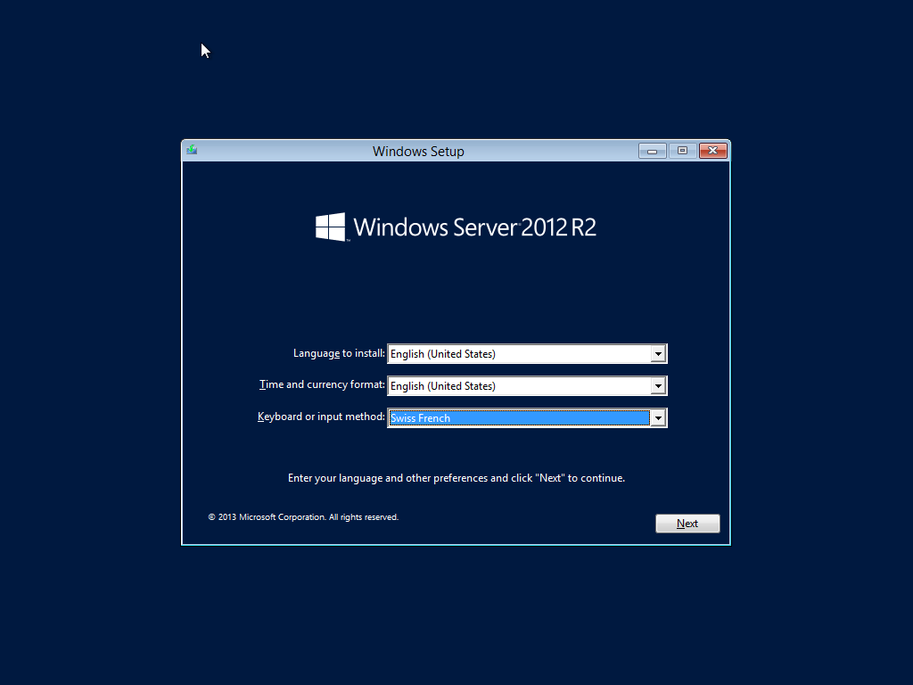
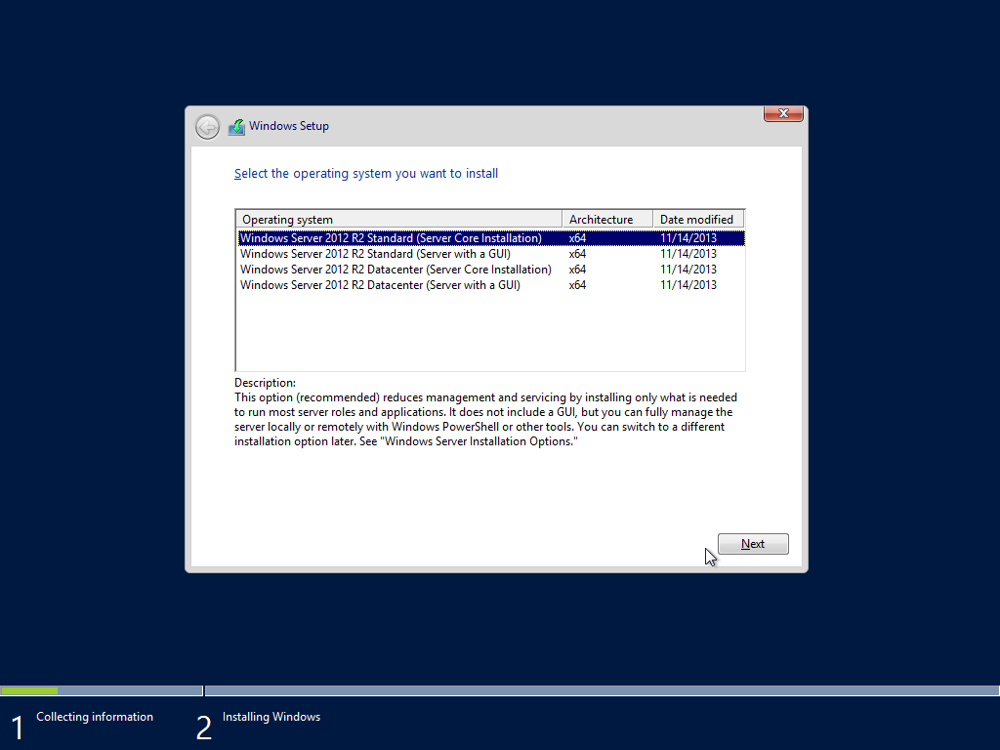
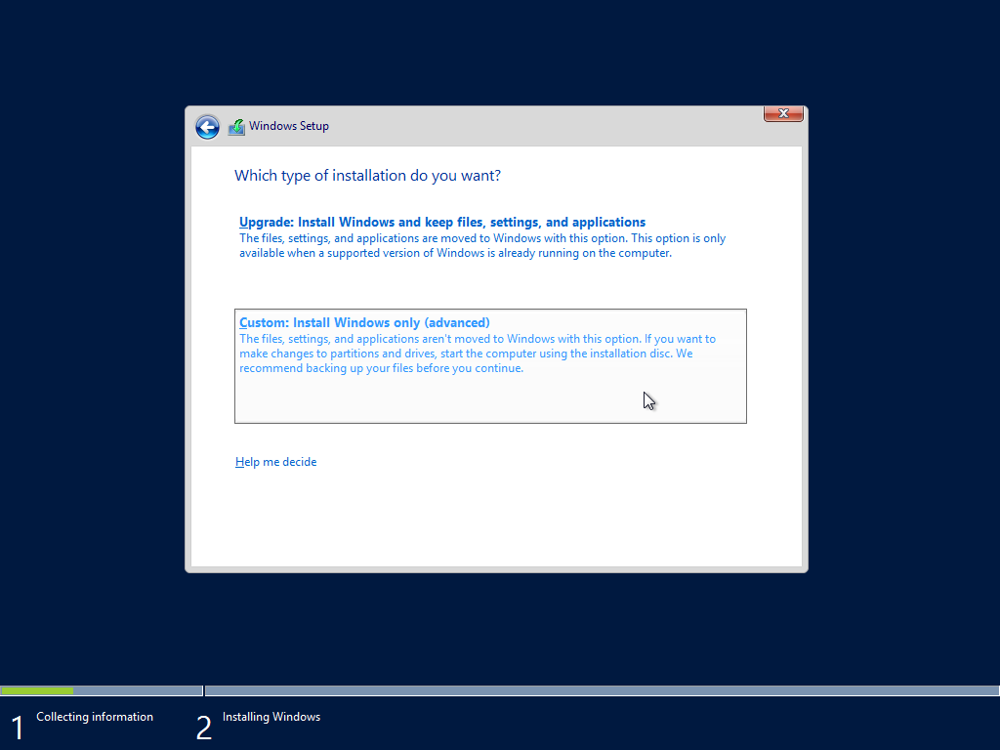
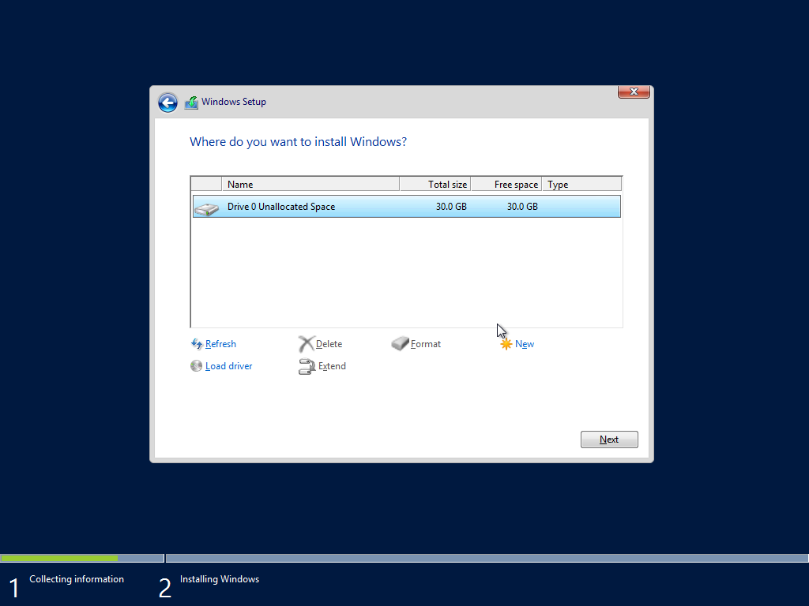
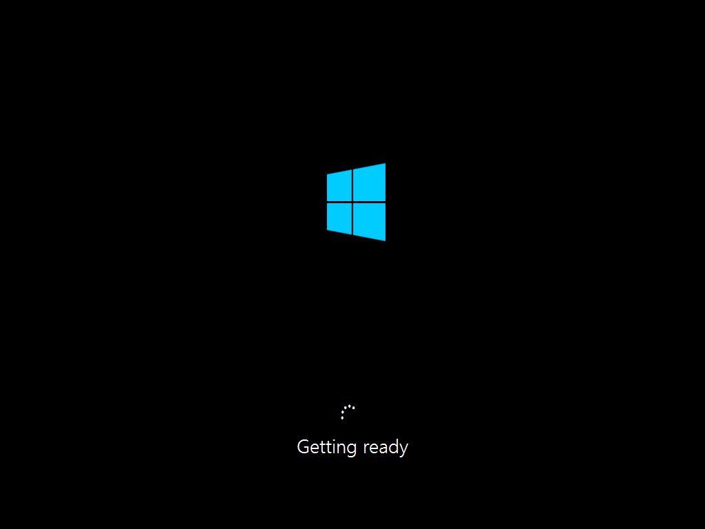
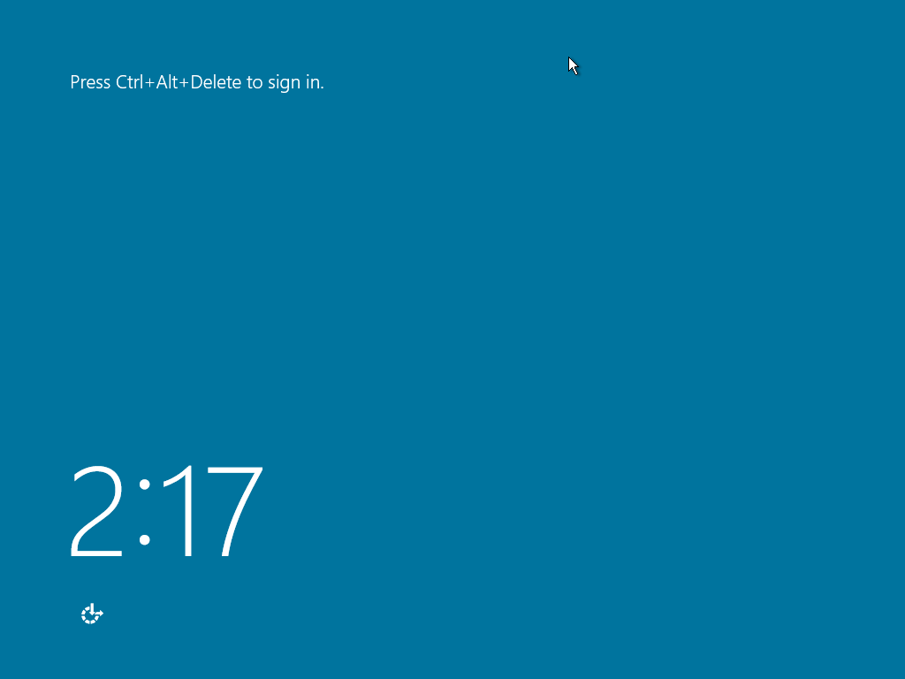

This was first published on https://www.dbi-services.com/blog/oracle-on-windows-server-core/ (2016-06-10)
Republishing here for new followers. The content is related to the versions available at the publication date.
. 
If SQL Server, the database for GUI fans, goes to Linux then Oracle, the database for command line fans, can go to Windows. Ok, that’s not new. But I’m not talking about the Windows with media player, animated icons, and The Microsoft Hearts Network. A real server: Windows Server Core. Actually, this is the first time I run something on Windows Core. Is it only command line? Is it hard to set? Do we have to leave those amazing GUIs like netmgr? Let’s try.
The installation starts as another Windows Server 2012R2 installation
The beauty of Windows. There is one button. You have a mouse. Just click on that central button.
I choose the ‘Core’ installation, with the hope I’ll not need PowerShell to configure it.     
I’m installing on brand new VirtualBox VM
I provision a 30GB disk but need only half of them.
Installation is going…
And I’m ready to log in.
This is the end of the GUI: I’ve only a command line window.
I have to setup the network. Easy thanks to sconfig:
So… How will I install Oracle? On linux, I can run the runInstaller in silent mode. But here it’s setup.exe
Great. Windows Core Server has no GUI for the system but GUI applications can run !
I can install the software. and then run DBCA
Let’s start the listener
and connect to it (I had to disable the firewall with
netsh advfirewall set allprofiles state off)
Here it is. Easy to install and run Oracle Database on a Windows Server without all the overhead of those playful accessories. Yes, Microsoft Windows can be a real server. Is there any reason to run a database on something else than the Core installation?
{kind=link}
{kind=link}
{kind=link}
{kind=link}
{kind=link}
{kind=link}
{kind=link}
{kind=link}
{kind=link}
{kind=link}
{kind=link}
{kind=link}
{kind=link}
{kind=link}